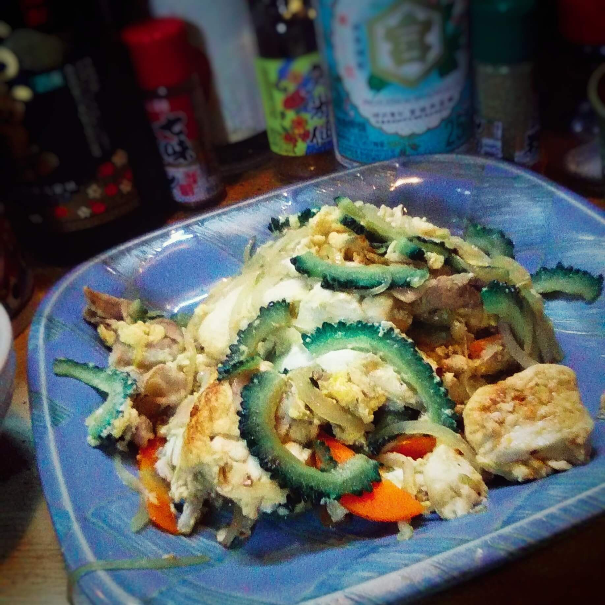

English | 日本語

※都道府県ごとに順次更新いたします。
味とめセレクションのご当地お取り寄せの定番メニューでお店に居ながらにしてニッポン全国制覇を目指す食の旅へ。いざ、出発。
※季節モノもおおく価格につきましてはお越しの際にお問合せください。
update

かために炊いたご飯をすりつぶし、串にちくわ状につけて、味噌をつけて焼きあげます。一皿２本がデフォルトでございますが、１本からのご用意もございます。きりたんぽ鍋もございます。気軽にお申し付けください。
米ぬかで漬け込んだ秋田の伝統的ご当地漬物です。秋田の方言で漬物を「がっこ」と呼ぶことがその名の由来、雪国ゆえの知恵から燻して保存した漬物。燻製ゆえに合うんです！チーズが。おのみもののつまみに是非ともどうぞ。
update

沖縄料理もございます当店人気メニュー。沖縄のゴーヤをたっぷり野菜、たまご、豚もしくは鶏を炒めたヘルシーメニュー。ほろ苦ゴーヤをたっぷり！ご飯、味噌汁、日替り小鉢を２品にお新香と日替わりデザート付き定食でもご用意もございます。気軽にお申し付けください。
ご当地沖縄より取り寄せ、土を洗い、薄皮を剥ぐ下ごしらえの手間を惜しまず、各種お料理向けに分類し、食材を余すことなくご提供いたします。当店でお出しする島らっきょはえぐみもなく美味いとご好評でございます。
当店常連さんに人気のしまらっきょ塩もみ。
当店熟練スタッフが手間ひまかけアク抜きし食材の良さが引き立つよう仕込み長らく愛されている素朴にしてお上品な一品。
らっきょならではの風味としゃきしゃき食感でお楽しみください。当店で揃える泡盛と共にご賞味くだされば、鼻の奥を吹き抜ける沖縄の風に思わず舌鼓を打っていただけます。
他、しまらっきょキムチ合え、納豆合えもございます。天ぷら、網焼き等、しまっらきょシリーズは多数ご用意ございます。是非、ご来店のうえお問い合わせください。
営業時間：月～金 9:30～23:00(OL) 土・日・祝 15:30～23:00(OL)
定休日：不定月曜休
ご予約・お問合せ
03-3422-5845
スペインのクッキングサイトの取材を受けました。只今、Twitter Movie でご覧になれます。